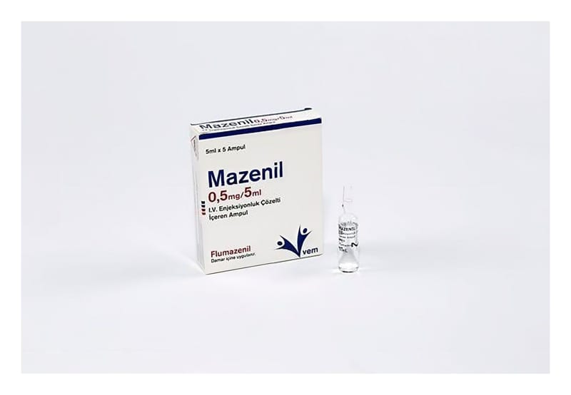

Mazenil 0.5 mg/5 ml IV Enjeksiyonluk Çözelti İçeren Ampul, 5 Adet

Ne için kullanılır
KT · Bölüm 1MAZENİL, etkin madde olarak flumazenil içeren, bir enjeksiyon veya infüzyon çözeltisidir. Çözeltinin 1 ml’si 0,1 mg flumazenil ihtiva etmektedir. Her kutuda her biri 5 ml çözelti içinde 0,5 mg flumazenil içeren 5 adet ampul bulunmaktadır. Flumazenil, benzodiazepinlerin (yatıştırıcı, uyku getirici, kas gevşetici ve kaygı/korku giderici özelliklere sahip özel grup) merkezi sakinleştirici etkilerinin tamamen veya kısmen tersine çevrilmesi için bir karşıt etkili maddedir (antidot).
Bu nedenle MAZENİL, belirli tanı testlerinden sonra sizi uyandırmak için anestezide veya sakinleştirici koşullarda tutuluyorsanız yoğun bakımda kullanılabilir. Ayrıca benzodiazepinlerle zehirlenme veya aşırı dozun teşhisi ve tedavisi için kullanılabilir. MAZENİL, çocuklarda (1 yaşından büyük) benzodiazepinlerle sakinleştirici koşullar altında tutulduktan sonra onları uyandırmak için de kullanılabilir.